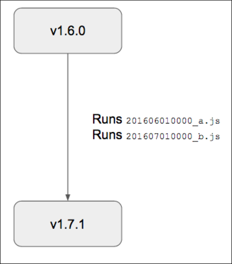

Tile Upgrades
This topic discusses product tile migrations, which refers to changing the name and values of properties when a customer upgrades tile versions. Tile authors supply a JavaScript file to trigger chaining migrations. Chaining migrations allows for multiple migrations to run sequentially.
Note: In order to use JS migrations, ensure you are using Ops Manager 1.7 or later.
Note: Changing the value ofsingle_az_only for jobs launched by your tile can cause data loss for customers who upgrade to Ops Manager v1.7 versions older than v1.7.20, or v1.8 versions older than v1.8.12. Contact Pivotal Support for help avoiding this.
Update Values or Property Names Using JavaScript
To update a product tile, tile authors must complete the following steps:
In a single
.jsfile, write JavaScript functions which return a hash of the tile’s properties.Name the file in the format
TIMESTAMP_NAME.js. TIMESTAMP must be in the form “YYYYMMDDHHMM” to indicate when the author created the migration. NAME is a human-readable name for the migration, for example,201606150900_example-product.js.Copy the
TIMESTAMP_NAME.jsfile to the PRODUCT/migrations/v1 directory.
Example JavaScript Migration File
The functions below display an example migration file:
exports.migrate = function(input) {
// Append text to a string
input.properties['.web_server.example_string']['value'] += '!';
// Delete property 'legacy_property' that's removed in new tile version
delete input.properties['.properties.legacy_property'];
// Rename property 'example_port' to 'example_port_renamed',
// retaining the previous value.
input.properties['.properties.example_port_renamed'] =
input.properties['.properties.example_port'];
delete input.properties['.properties.example_port'];
// Append text to a string list
input.properties['.properties.example_string_list']['value'].push(
'new-string-append-by-migration');
return input;
};
The properties object passed to your anonymous JavaScript migration functions are composed of properties at the job-level and product-level. Review the property names in the example metadata file in Tutorial Tile V3 for more information about job-level and product-level properties. The tile author must update migrations to match the corresponding product metadata file.
Each property’s key in the properties object is its property reference from the metadata file. Property references use one of the following forms:
.properties.{property_name}for product-level properties.{job_name}.{property_name}for job-level properties.properties.{property_name}.options.{option_name}or.{job_name}.{property_name}.options.{option_name}for selector option properties
The object accessed through the property reference contains a value key whose structure is specific to the type of the property. Objects may be a string, an array, or a hash. Review the reference below for the structure of each type of property.
JavaScript Migrations API
Inside a JavaScript migration function, the system provides the following functions for your code:
console.log(string)
Arguments: string
Return value: none
Description: Prints the string to the Rails log
Example:
console.log(“Hello World”);
getCurrentProductVersion()
Arguments: none
Return value: string (example: 1.7.1.0)
Description: Returns the version of the product that is currently installed
Example:
console.log(getCurrentProductVersion());
generateGuid()
Arguments: none
Return value: string (example: 115f9ced-3167-4c7c-959b-d52c07f32cbf)
Description: Returns a globally unique identifier (GUID) that can be used as the unique identifier for each element of a Collections property. When updating a Collection property blueprint, you as the migration author are responsible for updating the GUID of each new collection element that you create.
Notes: This function can be called a maximum of 100 times per `.js` file. If you need more than 100 GUIDs, break your migration into two `.js` files.
Example:
console.log(“Here's a GUID: ”+generateGuid())
abortMigration(string)
Arguments: string containing error message
Return value: none (never returns)
Description: Causes the migration to fail immediately. Rolls back all migrations in the current chain, i.e, no changes will be committed.
Example:
if (something > 5) {
abortMigration("Can't upgrade tile when the value of something is more than 5")
}
| Property Type | Value Structure | Example |
|---|---|---|
single-value properties |
Single value, but type-specific | properties['.properties.my-prop'].value = 'my-string'; properties['.properties.other-prop'].value = true |
dropdown |
Array of options | properties['.properties.my-prop'].value = ['option1', 'option2'] |
rsa_cert_credentials |
Object | properties['.properties.my-prop'].value = {'private_key_pem' => 'a-private-key', 'cert_pem' => 'a-cert-pem'} |
rsapkeycredentials |
Object | properties['.properties.my-prop'].value = {'private_key_pem' => 'a-private-key'} |
salted_credentials |
Object | properties['.properties.my-prop'].value = {'identity' => 'an-identity', 'salt' => 'mortons', 'password' => 'books'} |
simple_credentials |
Object | properties['.properties.my-prop'].value = {'identity' => 'an-identity', 'password' => 'secret'} |
collections |
Array of objects | properties['.properties.my-prop'].value =
[{name: {value: 'foo'}, recordid: {value: 1}},
{name: {value: 'bar'}, recordid: {value: 2}}]
|
selectorsSelected value |
String | properties['.properties.my-prop'].value = 'selected option label'
|
selectors{selector option name.property name} |
Value object specific to property type | properties['.properties.selector.option1.prop1'].value = 'foo'
properties['.properties.selector.option1.prop2'].value = 2
properties['.properties.selector.option2.prop3'].value = ['bar', 'baz']
|
Single value properties refer to properties whose type are any of the following: boolean, ca_certificate, domain, dropdown_select, email, http_url, integer, ip_address, ip_ranges, ldap_url, multi_select_options, network_address, network_address_list, port, smtp_authentication, string, string_list, text, uuid.
Refer to the example properties below when writing your own tile migration JS file:
{
properties: {
'.properties.example_boolean': { value: false } ,
'.properties.example_ca_certificate': { value: 'simple-typed-value'},
'.properties.example_domain': { value: 'simple-typed-value'} ,
'.properties.example_dropdown_select': { value: 'simple-typed-value'},
'.properties.example_email': { value: 'simple-typed-value'},
'.properties.example_http_url': { value: 'simple-typed-value'},
'.properties.example_integer': { value: 111},
'.properties.example_ip_address': { value: 'simple-typed-value'},
'.properties.example_ip_ranges': { value: 'simple-typed-value'},
'.properties.example_ldap_url': { value: 'simple-typed-value'},
'.properties.example_multi_select_options': { value: ['simple-typed-value']},
'.properties.example_network_address': { value: 'simple-typed-value'},
'.properties.example_network_address_list': { value: 'simple-typed-value'},
'.properties.example_port': { value: 22},
'.properties.example_smtp_authentication': { value: 'simple-typed-value'},
'.properties.example_string': { value: 'simple-typed-value'},
'.properties.example_string_list': { value: 'simple-typed-value'},
'.properties.example_text': { value: 'simple-typed-value'},
'.properties.example_uuid': { value: 'simple-typed-value'},
'.properties.example_rsa_cert_credentials': {
value: {'private_key_pem': 'a-private-key', 'cert_pem':'a-cert-pem'},
},
'.properties.example_rsa_pkey_credentials': {
value: {'private_key_pem':'a-private-key'},
},
'.properties.example_salted_credentials': {
value: {'identity':'an-identity', 'salt':'mortons', 'password':'books'},
},
'.properties.example_simple_credentials': {
value: {'identity':'an-identity', 'password':'secret'},
},
'.properties.example_collection': [
{name: {value: 'foo'}, record_id: {value: 1}},
{name: {value: 'bar'}, record_id: {value: 2}}
],
'.properties.example_selector': {value: 'option1'},
'.properties.selector.option1.prop1': {value: 'foo'},
'.properties.selector.option1.prop2': {value: 2},
'.properties.selector.option2.prop3': {value: 'bar,baz'}
}
}
Note: If your product uses Ops Manager 1.6 or earlier metadata, you need to write a transmogrifier content migration for customers using your product on 1.6, and a JavaScript migration for those on Ops Manager 1.7 or later. Review the transmogrifier example in the Tile Tutorial V1.
Examples Demonstrating Chaining Migrations
Migration chaining allows for multiple migrations to run sequentially when an upgrade is performed that skips an intermediate version. For example, suppose you have three versions of your product: 1.6.0, 1.7.0, and 1.7.1. The 1.6.0 product contains 1.6 metadata, so it does not contain any JavaScript migrations.

The following customer upgrade scenarios illustrate chaining migrations in more detail, and use the example product versions described above.
Scenario A: Upgrading from 1.6.0 -> 1.7.0 -> 1.7.1
In this scenario, the customer starts with the 1.6.0 product installed. After upgrading to Ops Manager 1.7 or higher, they decide to upgrade the product to 1.7.0. This causes the migration 201606010000_a.js to run. Several weeks later, the customer decides to upgrade from 1.7.0 to 1.7.1. Now the 201607010000_b.js migration runs. Even though the 1.7.1 product includes both migrations, Ops Manager does not re-run 201606010000_a.js, because it maintains a record of migrations.

Scenario B: Upgrading Directly from 1.6.0 -> 1.7.1
In this scenario, the customer also starts with 1.6.0 installed, but they decide to upgrade directly to 1.7.1, skipping the 1.7.0 version. Both migrations run in lexicographical order.

Scenario C: Installing 1.7.0, Then Upgrading to 1.7.1
In this scenario, the customer starts with nothing installed. They perform a clean install of version 1.7.0 of the product. On install of 1.7.0, no migrations run because migrations only run on upgrades. Later, the customer decides to upgrade to 1.7.1 of the product. Because 1.7.1 contains both migrations, and because no migrations have run on this system, only the second migration 201607010000_b.js runs. The system recorded the fact that 1.7.0 includes 201606010000_a.js, so that migration does not run.

Scenario D: Installing 1.7.1
In this scenario, the customer performs a clean install of 1.7.1, with no previous versions of the product installed. Since migrations are only triggered by upgrade events, no migrations run.
Note: Do not omit a migration from a later version of your tile. This breaks the “chaining” nature of migrations. Using the example above, if you release a 1.7.1 tile without the 201606010000_a.js migration, the system could not detect that 201606010000_b.js is the same migration that was present in the clean install in Scenario C.